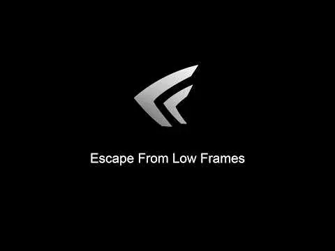

Escape From Low Frames
- Downloads
- 12,741
- Favourites
- 46
- Mod lists
- 40
Escape From Low Frames
A way to escape that disturbingly low framerate
🧩 Overview
Escape From Low Frames is a Performance focused project designed to try fixing Framerate & Latency issues with THE CITY
Escape From Low Frames Utilizes
- ⚙️ NVIDIA Profile Inspector Revamped (NVPI-R)
NVIDIA Profile Inspector Revamped (NVPI-R) is a community-driven, enhanced fork of the original NVIDIA Profile Inspector (NVPI), designed to improve usability, documentation, and user experience. It was created to address the limitations of the original tool, which had become outdated and lacked support, as well as the incomplete state of other forks.
⚡ What Does My Preset Try To Achieve?
- 📈 Increases framerate
- 📉 Tries to stabilise 1% lows
- 🧠 Tries to reduce the CPU bottlenecks
- 📊 Tries to keep frames consistent
- ⚙️ Utilizes Smooth Motion & DLSS 4.5
📥 Mod Installation

- Download from Latest Release
- Extract the Escape From Low Frames.zip file
- Open the Escape From Low Frames folder
- Open the NVPI-R.exe as Administrator
- Click on Profile and search for Escape From THE CITY
- Click on Export user defined profiles and then Export current profile including predefined settings
- Save Escape From THE CITY.nip to your desired location
- Click on Import user defined profiles and then Import profile(s)
- In the Escape From Low Frames folder, open Preset folder
- Now select the Escape From Low Frames.nip and Apply Changes
❓ Running Into Issues?
If you are running into issues, Leave a Comment With your issue or Contact me on Discord if you have a specific issue: @nrk_z
Version
1.0.3
Escape From Low Frames
A way to escape that disturbingly low framerate
Future Plans:
1. | Separate YouTube guide to debloat your graphics drivers and optimize your system
2. | Discord server for help with optimizations regarding THE CITY specifically. (WIP)
Update Information:
Updated The Nvidia Profile Inspector Revamped To The Latest Version
Added 4 New Presets Updated With New Settings
Updated All Presets With New Improved And Refined Settings With Bettered Latency And Performance
GTX Preset Is Finally Added
Bunch More Improvements Were Added That Is Not Listed
If you encounter issues, please leave a Comment!
Version
1.0.2
Escape From Low Frames
A way to escape that disturbingly low framerate
Future Plans:
1. | Adding Specific Presets for RTX 20-30 series cards and GTX cards (WIP)
2. | Optimizing further settings to balance the config for all users
3. | Separate YouTube guide to debloat your graphics drivers and optimize your system
4. | Discord server for help with optimizations regarding THE CITY specifically. (WIP)
Update Information:
Updated The Nvidia Profile Inspector + Nvidia Profile Inspector Revamped To Their Latest Versions
Added Another Preset With The Suffix (Fix) Which Was Made To Resolve The Current THE CITY Issue With Smooth Motion, If You Can Run Smooth Motion, Select The None (Fix) Version Of The Preset
UI Is Updated And More Modern
Added My Up To Date Global Settings
If you encounter issues, please leave a Comment!
Version
1.0.1
Escape From Low Frames
A way to escape that disturbingly low framerate
Future Plans:
1. | Adding Specific Presets for RTX 20-30 series cards and GTX cards
2. | Optimizing further settings to balance the config for all users
3. | Separate YouTube guide to debloat your graphics drivers and optimize your system
4. | Discord server for help with optimizations regarding THE CITY specifically.
Update Information:
Removed Useless Parameters/HexSettingIDs
Refined Settings To Reasonable Values
(Should Have) Fixed Previous Issues
Added My Own Global Nvidia Settings - (Would Recommend If You Think You Need It)
Updated Nvidia Profile Inspector Revamped CustomSettings.xml With New Hidden Settings
Removed Forced DLSS Presets - (Now You Can Select The Preset Straight Trough The Game)
(Quick disclaimer, the DLSS quality is forced to 80%, which is basically a value between Quality Ultra and DLAA Lite, if its to much, then you can change it)
If you encounter issues, please leave a Comment!
Version
1.0.0
Escape From Low Frames
A way to escape that disturbingly low framerate